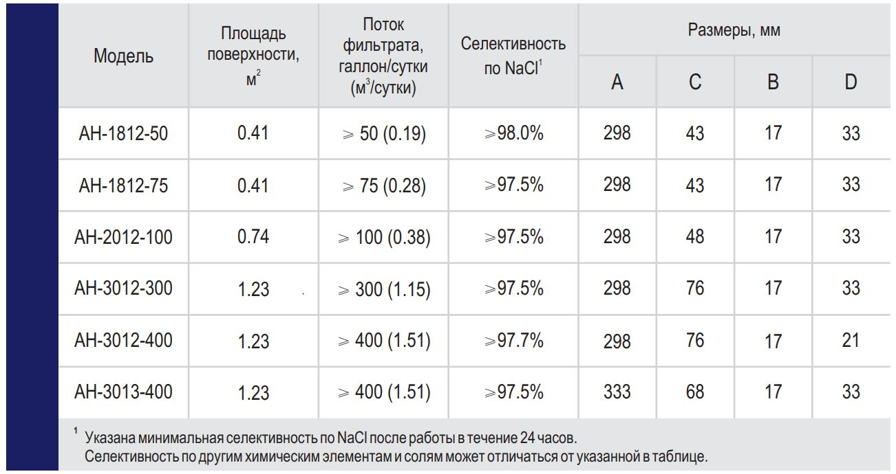
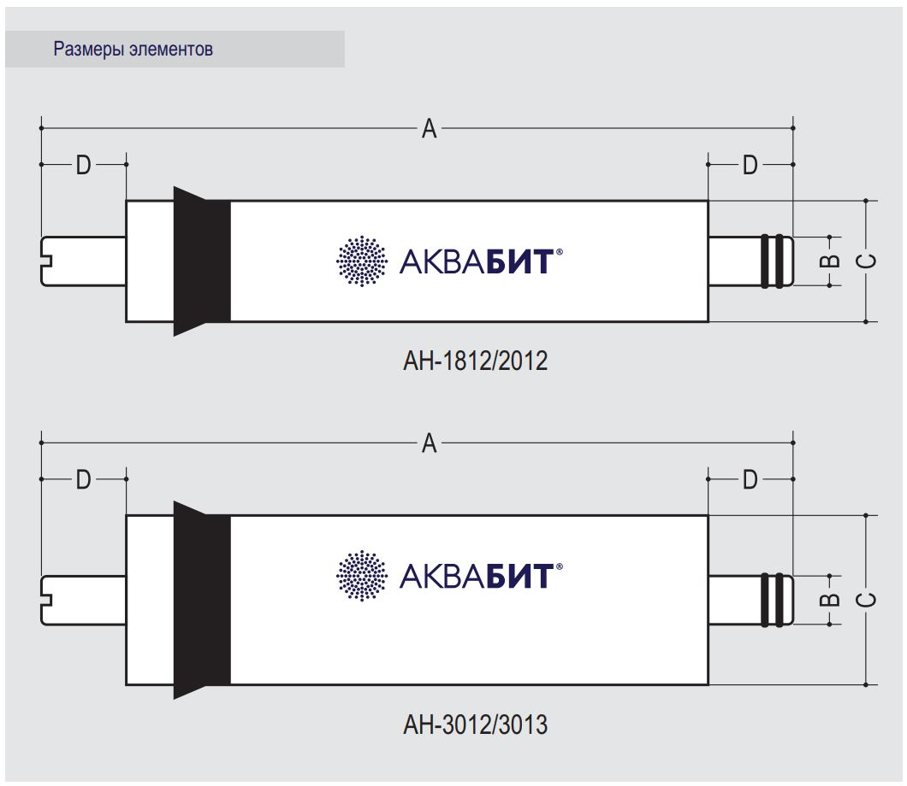

<div class="home">

  <section class="sect-first">
      <!-- <div class="img img-logo"></div> -->
      
      <h1>Российские<br>мембранные элементы</h1>
      <h2 class = "pf">
        Полнофункциональная версия сайта будет доступна с 01.11.2020<br><br>
        На данный момент нашей компанией производятся бытовые и полукоммерческие мембранные элементы серии АН.
      </h2>

      <h2 class = "discription">
        Бытовые и полукоммерческие<br>
        обратноосмотические мембранные элементы
      </h2>
      
      <h2 class = "ah">
        Серия АН
      </h2>

      <p>
          Серия АН тонкопленочных обратноосмотических мембранных элементов предназначена для работы на
          солоноватых водах с солесодержанием до 1500 мг/л. Основным преимуществом этой серии является
          высокая и стабильная селективность. Серия АН рассчитана на рабочее давление 4 атм. для элементов
          типоразмера 1812/2012 и 7 атм. для элементов типоразмера 3012/3013.
      </p>


      

      <p>
          Заявленные в таблице технические характеристики элементов фиксируются после 24 часов
          непрерывной работы при поддержании следующих параметров (условия тестирования):
      </p>

      
      <ul class="oglavl">
          <p class = "oglavl_h">Давление на входе в корпус:</p>
          <li>
              <span class="text">для элементов АН-1812/2012</span>
              <span class="page">415 kPa</span>
          </li>
          <li>
              <span class="text">для элементов АН-3012/3013</span>
              <span class="page">690 kPa</span>
          </li>
          <li class = "oglavl_h2">
              <span class="text">Температура тестировочного раствора</span>
              <span class="page">25 &#176;С</span>
          </li>

          <p class = "oglavl_h">Солесодержание (TDS) тестировочного раствора по NaCl:</p>

          <li>
              <span class="text">для элементов АН-1812/2012</span>
              <span class="page">250 мг/л</span>
          </li>
          <li>
              <span class="text">для элементов АН-3012/3013</span>
              <span class="page">500 мг/л</span>
          </li>
          <li class = "oglavl_h2">
              <span class="text">pH раствора</span>
              <span class="page"> 7.5</span>
          </li>

          <li class = "oglavl_h2">
              <span class="text">Коэффициент отбора фильтрата</span>
              <span class="page">  15% </span>
          </li>
      </ul>

      <p>Предельные эксплуатационные параметры:</p>

      <ul class="oglavl">
          <li class = "oglavl_h2">
              <span class="text">Максимальное рабочее давление</span>
              <span class="page"> 2.07 МРа</span>
          </li>
          <li class = "oglavl_h2">
              <span class="text">Максимальная температура воды</span>
              <span class="page"> 45 &#176;С</span>
          </li>
          <li class = "oglavl_h2">
              <span class="text">Максимальное значение SDI входной воды</span>
              <span class="page">5</span>
          </li>
          <li class = "oglavl_h2">
              <span class="text">Макс. концентрация свободного хлора в воде</span>
              <span class="page">0.1 мг/л</span>
          </li>
          <li class = "oglavl_h2">
              <span class="text">Диапазон рН в процессе эксплуатации</span>
              <span class="page"> 3 – 10 </span>
          </li>
      </ul>

      


    <a href="https://drive.google.com/file/d/1pCG3rWqibrw9un6yn7G5rCAip4MyYfj4/view?usp=sharing" class = "ssilka">
      
      <p class = "link1">Описание серии АН в формате PDF</p>
      
    </a>
    </div>
  </section>
</div>